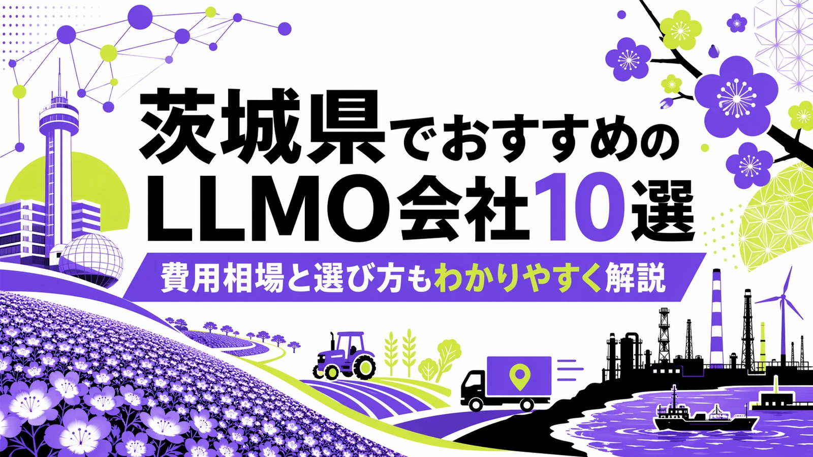
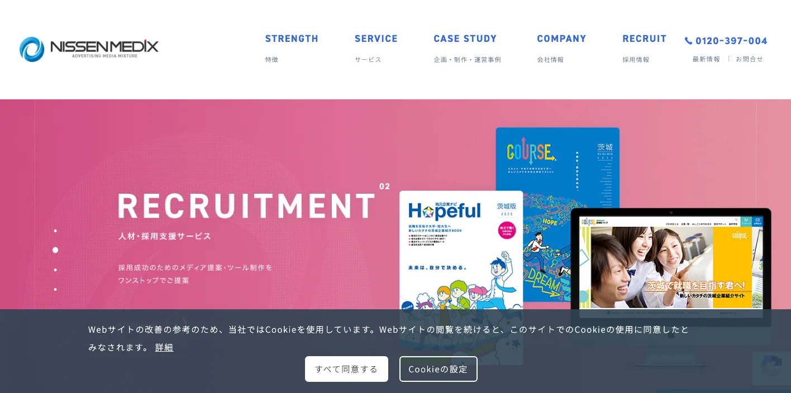
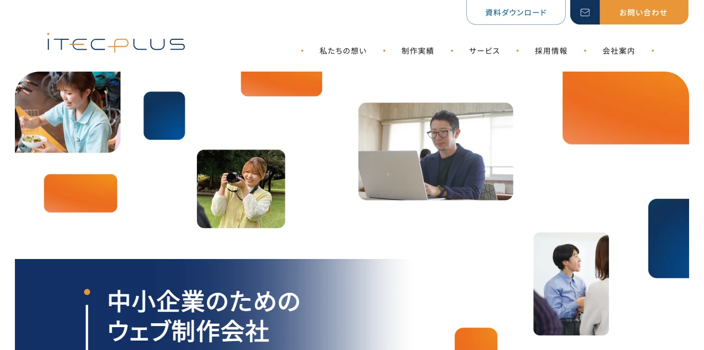
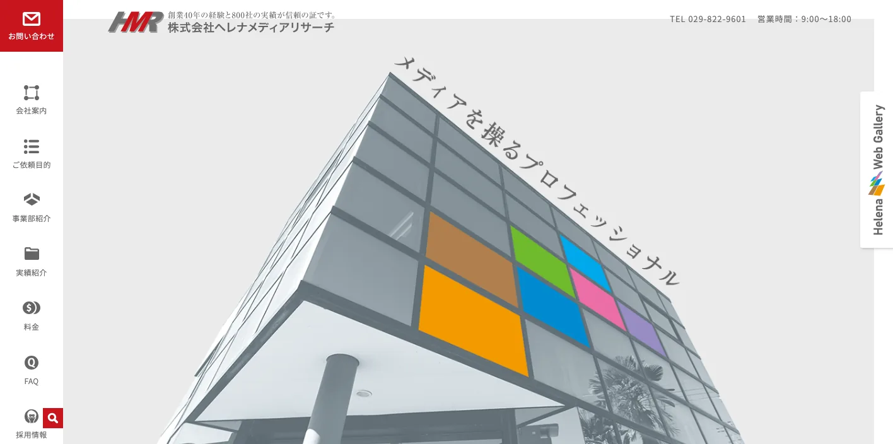
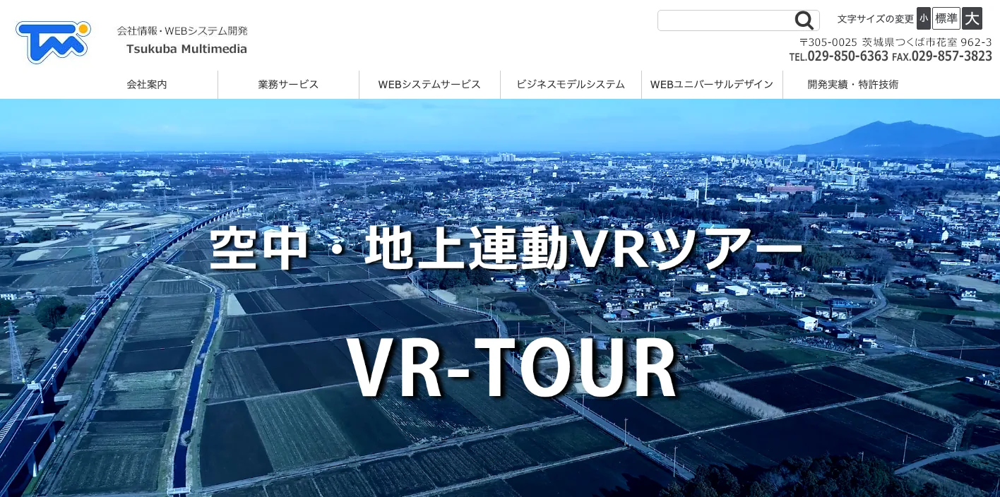
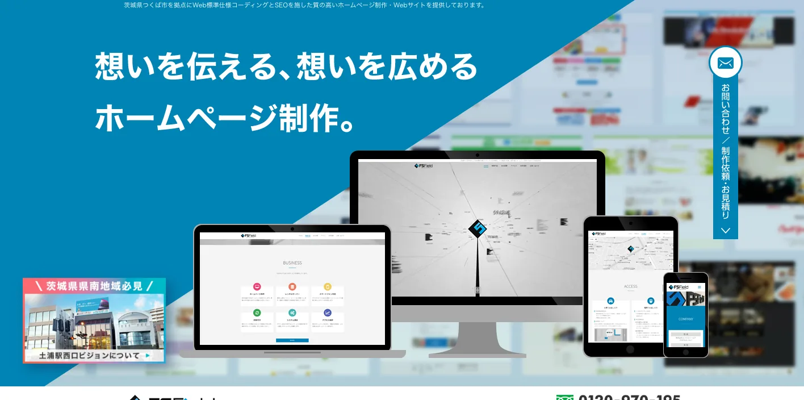
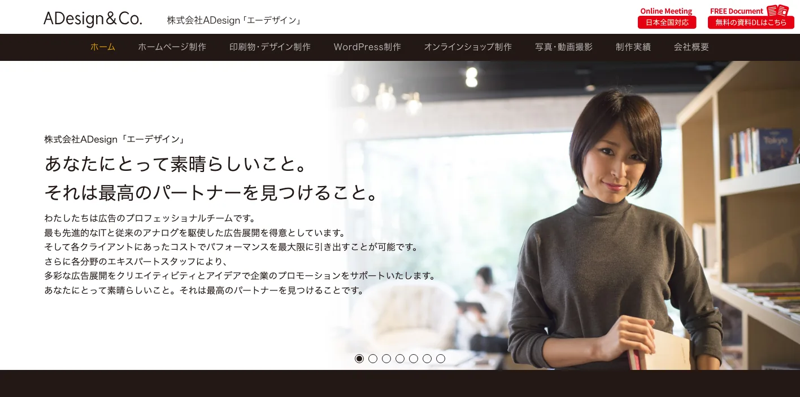
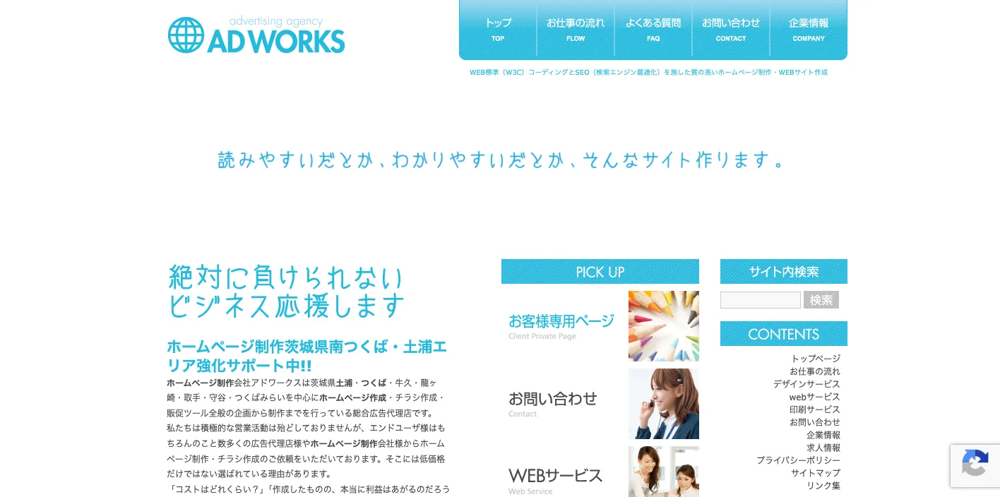
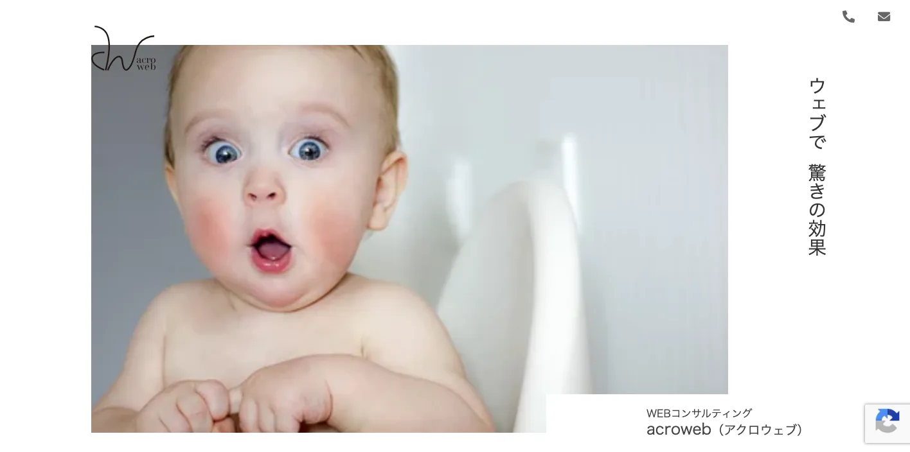
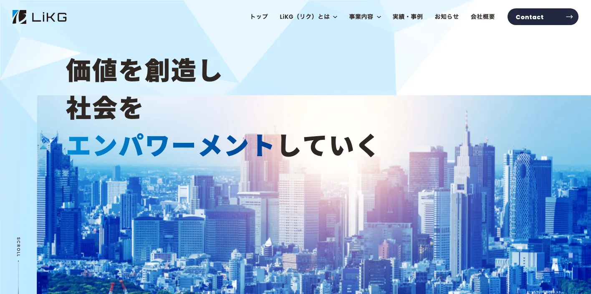

茨城県でおすすめのLLMO会社10選｜費用相場と選び方もわかりやすく解説

茨城県でLLMO会社を選ぶときは、単に「水戸市のWeb制作会社」「つくば市のSEO会社」だけで探すと、必要な支援がずれやすいです。水戸市を中心にした県央、つくば市・土浦市・牛久市・取手市・守谷市の県南、日立市・ひたちなか市の県北、古河市・筑西市・常総市の県西、鹿嶋市・神栖市の鹿行では、AI検索で聞かれる質問の形がかなり違うからです。
茨城県公式の人口月報では、2026年3月1日現在の人口は2,783,515人です。令和6年観光客動態調査では、2024年の観光入込客数は延べ6,180万人、観光消費額は4,447億円でした。さらに茨城県の2024年農業産出額は5,494億円で、8年連続全国3位です。つくば研究学園都市、鹿島臨海工業地帯、首都圏近接の物流・住宅商圏もあり、地域ごとに情報設計の重点が変わります。
つまり茨城県のLLMOでは、地域名を入れた記事を増やすだけでは足りません。研究開発、農業・食品、観光、医療福祉、製造、物流、採用、BtoB商談まで、一次情報をAIが読み取れる形に整えることが重要です。基本から確認したい方はLLMO対策の基礎記事、近隣県も見たい方は福島県の比較記事や東京都の比較記事も参考になります。自社サイトの現状を先に見たい場合は無料LLMO診断から始めると判断しやすいです。
目次

茨城県でおすすめのLLMO会社10選
今回は、茨城県内に拠点があり、Web制作、SEO、Webマーケティング、CMS、広告、取材、運用支援などの公開情報を確認しやすい会社を中心に、LLMOを明示している全国対応会社も補完的に加えました。茨城県内でLLMO専業を前面に出す会社はまだ多くありません。そのため、AI検索対策そのものだけでなく、サイト構造、FAQ、地域ページ、取材、写真、EC、採用情報、更新体制まで支援できる会社を比較対象にしています。
茨城県では、水戸の行政・生活サービス、つくばの研究開発・スタートアップ、土浦・牛久・守谷の住宅商圏、ひたちなか・日立の製造、鹿島・神栖の臨海工業、県西の物流・農業まで、必要な情報が変わります。まずは表で向いている企業を確認し、その後に各社の特徴を見てください。
| 会社名 | 拠点性 | 向いている企業 | 支援の軸 |
|---|---|---|---|
| 株式会社日宣メディックス | 水戸市 | 広告・地域メディア・Web制作を一体で進めたい企業 | Web制作・広告・地域メディア・コンテンツ |
| 株式会社アイテックプラス | 水戸市 | 中小企業、公的団体、スポーツ・地域団体の運用を重視する企業 | Web制作・運用・SaaS導入・地域活動 |
| 株式会社ヘレナメディアリサーチ | 土浦市 | Web、映像、印刷、システムまでまとめたい企業 | Web制作・システム・映像・印刷・コンサル |
| 株式会社つくばマルチメディア | つくば市 | 研究機関、自治体、中小企業でCMSやSEOを重視する組織 | CMS・SEO・サーバー・ドメイン・多拠点サイト |
| 株式会社エフズフィールド | つくば市 | Web標準、構造化、公開後メンテナンスを重視する企業 | Web制作・SEO・運用保守・構造化 |
| 株式会社ADesign | 水戸市 | デザイン、SEO、広告、SNSまでまとめたい企業 | ホームページ制作・SEO・広告・SNS支援 |
| 株式会社つくばアドワークス | 土浦市 | 県南・県西の広域対応や販促物も相談したい企業 | Web制作・SEO・チラシ・販促ツール |
| 合同会社acroweb | 水戸市 | 小規模事業者でSEO、SNS、MEO、求人を連動したい企業 | Webコンサル・ホームページ制作・SNS・MEO |
| 株式会社LiKG | 全国対応 | LLMO診断から記事制作まで任せたい企業 | LLMO診断・LLMO×SEO伴走・記事制作 |
| 株式会社ジオコード | 全国対応 | SEOとAI最適化を実装込みで進めたい企業 | SEO・コンテンツ・AIO/LLMO・実装改善 |
株式会社AIMAは茨城本社の会社ではありませんが、全国対応でLLMO支援を提供しています。月額5万円のLLMO支援は初期費用なし・1ヶ月単位で始められ、質問設計、記事制作、引用チェックに絞って実務を進められます。水戸、つくば、県南、県西、鹿行、県北のように検索文脈が分かれる場合も、まず無料LLMO診断で優先順位を確認できます。
1. 株式会社日宣メディックス

株式会社日宣メディックスは、水戸市に本社を置く広告・出版・Web制作会社です。公式サイトでは、Webサイト制作について、顧客視点での情報発信、サイトマップや画面設計書の作成、SEO対策、Web広告や紙面広告、プロモーションツールの活用まで案内しています。茨城県内の情報誌や地域メディア、Web制作実績も確認できます。
茨城県では、地域の生活者に向けた情報発信と、検索・AIで比較される情報設計の両方が必要です。日宣メディックスは、水戸・県央を中心に、広告、地域メディア、Web、コンテンツをまとめて動かしたい企業に向いています。
2. 株式会社アイテックプラス

株式会社アイテックプラスは、水戸市双葉台に拠点を置くWeb制作会社です。公式サイトでは、中小企業向けのWebサービス、SNSコンテンツ表示、Web接客ツール、マルチデバイス対応CMS、チャットボット型マーケティングツールなどを案内しています。会社案内では、企業や団体のWebサイト企画、ディレクション、デザイン、制作、運用、SaaS導入支援を中心に活動していると説明されています。
LLMOでは、公開後の運用とユーザーの声の活用が重要です。アイテックプラスは、茨城県内の中小企業、公的団体、スポーツ・地域団体が、運用しながら情報を育てたい場合に比較しやすい会社です。
3. 株式会社ヘレナメディアリサーチ

株式会社ヘレナメディアリサーチは、土浦市小松の総合広告制作・マーケティング会社です。公式サイトでは、ホームページ制作、システム開発、サーバー管理、映像制作、印刷制作、デジタルサイネージ、コンサルティングを営業品目として掲げています。Web、映像、印刷、コンサルを組み合わせたクロスメディアマーケティングや、800件以上の制作実績も案内されています。
茨城県では、観光、病院、ホテル、学校、自治体、研究機関、製造業など、Webだけでは伝わりにくい案件があります。ヘレナメディアリサーチは、土浦・つくば・水戸を含む県内企業が、Web、動画、印刷、システムを一体で整えたい場合に向いています。
4. 株式会社つくばマルチメディア

株式会社つくばマルチメディアは、つくば市花室のWeb制作・CMS・サーバー関連会社です。公式サイトでは、ホームページ制作、SEO対策、CMS、複数ホームページ制作、スマートフォン対応、サーバー、ドメイン管理などを案内しています。科学的根拠に基づいたキーワード選択、ホームページ設計、運営管理マニュアルに基づく指導など、SEO支援の考え方も示しています。
つくば市では、研究機関、大学、スタートアップ、医療・バイオ、BtoB技術企業のように、専門情報を分かりやすく構造化する力が必要です。つくばマルチメディアは、専門性の高い情報をCMSで継続更新し、SEOと運用管理まで整えたい組織に向いています。
5. 株式会社エフズフィールド

株式会社エフズフィールドは、つくば市千現のWeb制作会社です。公式サイトでは、Web標準仕様のコーディングとSEOを施したホームページ制作を掲げ、掲載原稿の準備、根拠のあるデザイン、正しく構造化されたコーディング、公開後のメンテナンス体制まで案内しています。つくば研究支援センター内に拠点がある点も特徴です。
LLMOでは、見た目よりも、AIが読めるHTML構造、ページ見出し、FAQ、内部リンク、更新体制が重要になります。エフズフィールドは、つくば周辺の研究開発・BtoB・地域企業が、Web標準と構造化を重視してサイトを作りたい場合に比較しやすい会社です。
6. 株式会社ADesign

株式会社ADesignは、水戸市のホームページ制作・SEO対策会社です。公式サイトでは、ホームページ制作・SEO対策「HP-SEO」事業を案内し、W3Cに準じたサイト構築、コピーライト、CMS、アクセス解析、ヒートマップ分析、Googleマップ情報更新、LINE公式アカウント、Google広告、SNS広告などを支援領域として示しています。
水戸・県央の店舗や企業では、Webサイト、Googleマップ、広告、SNS、採用LPをバラバラに動かすと管理が難しくなります。ADesignは、デザイン性を保ちながら、SEO、広告、SNS、運用改善までまとめて相談したい企業に向いています。
7. 株式会社つくばアドワークス

株式会社つくばアドワークスは、土浦市を拠点に、ホームページ制作、チラシ作成、販促ツール全般の企画制作を行う総合広告代理店です。公式サイトでは、Web標準コーディングとSEOを施したホームページ制作を案内し、県央、県南、県西、千葉、東京、埼玉、栃木までの出張可能エリアも示しています。
茨城県南や県西では、つくば、土浦、牛久、龍ケ崎、守谷、古河、筑西、常総など、市町村をまたいだ商圏設計が必要です。つくばアドワークスは、Webと紙の販促を合わせ、広域商圏に向けて情報を届けたい企業に向いています。
8. 合同会社acroweb

合同会社acrowebは、水戸市見川のWebコンサルティング会社です。公式サイトでは、SEO対策をしたホームページを軸に、SNS、Googleマイビジネス、動画配信、名刺、チラシなどを目的に合わせて連携させる提案を案内しています。Indeed連携による求人情報の自動更新や、業務改善につながる問い合わせフォーム活用にも触れています。
小規模事業者では、高額なコンサルティングよりも、まず基本情報、地域名、FAQ、採用、SNS、Googleビジネスプロフィールをそろえるほうが現実的です。acrowebは、水戸周辺の店舗・小規模企業が、SEO、MEO、SNS、求人を無理なく連動したい場合に比較しやすい会社です。
9. 株式会社LiKG

株式会社LiKGは、LLMOコンサルティングを明確に打ち出している全国対応会社です。公式ページでは、LLMO診断、LLMO×SEOコンサルティング、EEAT強化記事制作を案内し、AI OverviewやChatGPTでの露出状況調査、20項目診断、改善レポート、構造化データ改善指示、記事構成作成などを説明しています。料金も、LLMO診断10万円から、LLMO×SEOコンサルティング30万円からと公開されています。
茨城県の企業でも、すでにサイトや記事があり、AI検索にどう出ているかを診断したい場合に向いています。研究開発、農業、食品、観光、医療、採用、製造など、一次情報を持っているのにAI検索で拾われていない会社は、診断から始める価値があります。
10. 株式会社ジオコード

株式会社ジオコードは、SEO対策、コンテンツマーケティング、オウンドメディア運用、サイト修正・実装、AIO・LLMOなどAI最適化まで案内している全国対応会社です。サービスページでは通常プラン15万円からと公開されており、SEO対策コンサルティング、サイト修正、UI/UX改善、AI最適化、コンテンツマーケティングを組み合わせられる構成です。
茨城県内でも、県外商圏を持つBtoB企業、EC企業、採用を強める企業では、地場制作会社だけでなく全国のSEO会社も比較対象になります。ジオコードは、SEOとLLMOを分けず、分析から実装まで任せたい企業に向いています。
参考：株式会社ジオコード｜SEO対策・AIO・LLMOなどAI最適化も徹底支援
茨城県のLLMO会社を比較する際のポイント
茨城県でLLMO会社を比較するときは、会社名の知名度よりも、茨城県の地域構造と産業の違いをページ設計に落とし込めるかを見てください。ここでは、会社一覧とは役割を分け、茨城県ならではの比較軸だけを整理します。
水戸・つくば・県南・県西・鹿行・県北で検索意図を分けられるか
茨城県は、県庁所在地の水戸、研究開発拠点のつくば、首都圏通勤・住宅商圏の県南、製造と物流が絡む県西、鹿島臨海工業地帯を抱える鹿行、日立・ひたちなかを含む県北で検索意図が変わります。人口も約278万人規模で、地域ごとの産業と生活導線が大きく違います。
LLMO会社には、水戸、つくば、土浦、取手、守谷、日立、ひたちなか、古河、筑西、神栖を同じ「茨城県」として一括りにせず、地域ごとの相談内容、移動距離、商圏、採用事情、産業文脈を分けて設計できるかを確認しましょう。
参考：茨城県｜茨城県の人口と世帯（推計）令和8年3月1日現在
観光はひたちなか・大洗・筑波山・笠間・常総を分けられるか
茨城県の令和6年観光客動態調査では、2024年の観光入込客数は延べ6,180万人、観光消費額は4,447億円でした。入込客数上位市町村には、ひたちなか市、大洗町、つくば市、笠間市、阿見町が並び、道の駅常総、御船祭、古河花火大会、筑波山などの増加要因も示されています。
観光・宿泊・飲食では、AIが「ひたち海浜公園はいつ行くべきか」「大洗で子連れに向く宿」「筑波山のアクセス」「笠間焼とカフェ巡り」「道の駅常総の混雑」のような質問に答えます。LLMO会社には、観光地名、季節、交通、予約、周辺施設、よくある不安をセットで整理できるかを見てください。
参考：茨城県｜2024年（令和6年）観光客動態調査の結果について
農業・食品・ECでは園芸、米、畜産の情報を構造化できるか
茨城県の2024年農業産出額は5,494億円で、2017年から8年連続で全国第3位です。部門別では、米が26％、園芸が48％、畜産が23％となっており、メロン、れんこん、かんしょ、米、野菜、畜産、加工食品、ギフト、ECなど、商品情報が成果に直結しやすい地域です。
この領域では、商品名だけでは不十分です。産地、品種、出荷時期、保存方法、配送温度、ギフト対応、法人取引、レシピ、賞味期限、購入方法まで出す必要があります。LLMO会社には、商品情報をAIが読みやすい表、FAQ、構造化データ、比較ページに落とせるかを確認しましょう。
つくば研究学園都市の専門情報を扱えるか
つくば市公式サイトでは、筑波研究学園都市は世界的な科学技術拠点都市として実績を積み重ね、現在ではおよそ2万人の研究従事者を有する日本最大のサイエンスシティと説明されています。研究機関、大学、スタートアップ、バイオ、医療、AI、ロボット、宇宙、材料など、専門性の高い情報が多い地域です。
BtoBや研究開発系のLLMOでは、専門用語を並べるだけでは足りません。研究内容、技術の用途、共同研究、導入事例、設備、論文、認証、採用情報を、購買担当者や求職者が理解できる形に翻訳する必要があります。専門情報を正確に、かつ分かりやすくページ化できる会社を選びましょう。
鹿島臨海工業地帯・物流・エネルギーのBtoB情報を説明できるか
茨城県の鹿島臨海工業地帯の将来ビジョンでは、同地域が鉄鋼、石油精製・石油化学、食糧・飼料、木材、物流など多様な産業集積を持ち、発電所や再生可能エネルギー、水素関連の拠点としても期待されていると説明されています。鹿行地域では、工場、物流、港湾、エネルギー、保守、採用の情報設計が重要です。
AI検索では「どの加工に対応できるか」「納入先業界はどこか」「港湾や工業団地との距離」「安全管理」「資格」「保守体制」「採用条件」が比較されます。LLMO会社には、技術情報を営業前の判断材料として整理できるかを確認してください。
参考：茨城県｜鹿島臨海工業地帯の競争力強化に向けた将来ビジョン
首都圏近接の採用・住宅・医療福祉まで運用に入れられるか
茨城県は東京圏に近く、つくばエクスプレス沿線や県南地域では住宅、教育、医療、士業、クリニック、工務店、採用の情報競争が起こりやすいです。一方で、県北や県西では広域移動、車利用、求人、事業承継、地域医療・福祉の情報が重要になります。
比較時には、制作費だけでなく、誰が、いつ、どの情報を更新するのかを確認しましょう。CMS、更新代行、写真差し替え、FAQ追加、Googleビジネスプロフィール、SNSまで含めた運用設計ができる会社のほうが、茨城県の実務には合いやすいです。
茨城県のLLMO会社に依頼する費用相場
茨城県でLLMOを外注する場合、費用は「どこまで任せるか」で大きく変わります。診断だけなら10万円前後から検討できますが、水戸市内の店舗サイトを少し直すのか、つくば・県南・県西・鹿行まで地域別ページを作るのか、食品ECや観光ページ、採用サイト、BtoB技術ページまで整えるのかで必要な予算は違います。
大事なのは、単に安い会社を探すことではありません。単一商圏の集客なのか、県内広域の情報設計なのか、ECや採用や専門産業の一次情報まで含むのかを先に分けて見積もることです。
| 支援タイプ | 目安 | 主な内容 |
|---|---|---|
| 診断・スポット相談 | 10万円前後〜 | AI検索での出方確認、競合比較、改善優先度の整理 |
| ライトな継続支援 | 月額5万円〜15万円 | FAQ追加、少数ページ改善、記事作成、地域名ページの整備 |
| 伴走型の標準帯 | 月額15万円〜30万円前後 | 戦略設計、記事構成、内部リンク、構造化データ、定例改善 |
| 制作・EC・採用込み | 総額30万円台〜150万円超 | サイトリニューアル、EC、採用サイト、写真、商品情報、CMS |
まずは診断だけなら10万円前後から始めやすい
公開価格で分かりやすい入口は診断プランです。LiKGはLLMO診断プランを10万円から公開しています。まずAI検索で自社がどう扱われているか、競合と比べて何が足りないかを知りたい企業には使いやすい価格帯です。
茨城県では、地域名、観光地名、商品名、研究分野、産業分野が複雑に組み合わさります。いきなり記事を量産するより、どの質問で出たいのか、どの地域と商品を優先するのかを先に決めるほうが無駄が少ないです。
参考：株式会社LiKG｜LLMOコンサルティング 料金プラン
小さく始めるなら月額5万円〜15万円帯が入口になる
店舗、クリニック、士業、工務店、美容、飲食、教室のように、まず少数ページを整えたい場合は月額5万円〜15万円帯が入口になります。AIMAでも月額5万円のLLMO支援を公開しており、質問設計や記事制作から小さく始めることができます。
この帯は、水戸市やつくば市の単一店舗なら現実的です。ただし、県南広域、食品EC、研究開発系BtoB、鹿島臨海工業地帯関連、採用ページまで作る案件では、追加費用を見ておく必要があります。
伴走支援の中心帯は月額15万円〜30万円前後
毎月改善を進めるなら、月額15万円〜30万円前後が一つの中心帯です。ジオコードは通常プラン15万円から、LiKGはLLMO×SEOコンサルティングを30万円から公開しています。この帯になると、戦略設計、競合調査、記事構成、ページ改善指示、構造化データ、レポート、定例打ち合わせまで含まれやすくなります。
茨城県では、都市型サービス、観光、農業・食品、医療福祉、採用、製造、研究開発で必要なページが違います。一度作って終わりではなく、AI検索の出方を見ながら直す支援が必要な会社は、この価格帯で比較すると現実的です。
参考：株式会社ジオコード｜SEO対策・AIO・LLMOなどAI最適化も徹底支援
参考：株式会社LiKG｜LLMOコンサルティング 料金プラン
制作・EC・採用まで含めると総額30万円台〜150万円超まで広がる
既存サイトが古い、スマホで見づらい、CMSがない、採用ページが弱い、EC導線がない場合は、LLMOだけでなく制作費が必要です。茨城県では、農産品、加工食品、観光、研究開発、製造、物流、医療福祉など、写真や商品説明が成果に直結する案件が多くあります。
地場制作会社に相談する場合は、Web制作費、写真撮影、原稿作成、CMS設定、更新代行、保守費用がどこまで含まれるかを確認しましょう。AI検索以前に、ユーザーとAIが読める情報をサイト内に用意する費用が含まれているかが重要です。
茨城県では取材・撮影・専門情報整理で費用が上がりやすい
茨城県の案件では、現地取材や写真撮影、商品情報整理、技術情報の翻訳が効きやすいです。観光ではアクセスや季節、農産品では品種や出荷時期、製造では設備や加工範囲、研究開発では用途と事例、採用では働く人の雰囲気が判断材料になります。
AI検索でも、会社名、住所、サービス名、商品名、価格、実績、FAQが整理されているほうが理解されやすくなります。取材・撮影・原稿作成・更新作業が見積もりに含まれているかを必ず確認しましょう。
水戸・つくば単点か、県内広域かで予算を分ける
費用で大きく変わるのは、水戸市やつくば市だけを狙うのか、県南、県西、鹿行、県北まで広げるのかです。単一店舗なら、主要ページとFAQだけでも始めやすいです。一方、県内広域や県外商圏まで含めると、地域別ページ、観光導線、商品ページ、事例、配送条件、採用情報が増えます。
迷う場合は、最初に無料LLMO診断のような小さい入口で優先順位を決め、その後に単一商圏で進めるか、県内広域で設計するかを決めるのが安全です。
茨城県のLLMO会社に関するよくある質問
ここでは、茨城県の企業や店舗がLLMO会社を検討するときに出やすい疑問を整理します。比較ポイントや費用相場とは役割を分け、依頼前に確認すべきことだけを短くまとめます。
茨城県のLLMO会社に依頼する意味はありますか？
あります。茨城県は水戸、つくば、県南、県西、鹿行、県北で商圏や検索意図が変わります。観光、医療福祉、農業・食品、研究開発、製造、物流、採用などの情報をAIに正しく理解される形で整える価値があります。
茨城県内の会社でないと意味はありませんか？
必ずしも県内本社である必要はありません。重要なのは、水戸市、つくば市、土浦市、守谷市、日立市、ひたちなか市、古河市、神栖市などの違いや、研究開発、農業、鹿島臨海工業地帯、観光の文脈を理解して設計できるかです。
水戸市やつくば市以外の会社でもLLMOは必要ですか？
必要です。県北、県西、鹿行では商圏が広く、地元名だけでは説明が足りません。隣接市町村、交通、配送、出張対応、採用、取引先業界まで整理したほうが、AI検索で比較されやすくなります。
茨城県の観光・宿泊・飲食でもLLMOは効果がありますか？
あります。ひたちなか、大洗、筑波山、笠間、常総、古河、鹿島神宮などでは目的や季節が違います。アクセス、所要時間、混雑、予約、周遊、子連れ可否、雨天時FAQを整理すると、AIの比較回答に入りやすくなります。
茨城県の農業・食品・ECでもLLMOは使えますか？
使えます。メロン、れんこん、かんしょ、米、野菜、畜産、加工品などは、産地、規格、保存方法、出荷時期、配送条件、法人取引条件を整理すると、購入前や仕入れ前の比較で選ばれやすくなります。
研究開発・製造・物流関連企業でもLLMOは有効ですか？
有効です。設備、研究テーマ、加工範囲、品質管理、納入実績、認証、共同研究、物流拠点、採用情報を整理すると、AIが専門性や対応範囲を理解しやすくなります。
SEO会社とLLMO会社は何が違いますか？
SEOは検索結果で見つけてもらう施策、LLMOはChatGPTやAI OverviewなどのAI回答で引用・参照されやすくする施策です。茨城県では、地域名検索とAI検索を一体で考えられる会社が向いています。
茨城県のLLMO会社に依頼したら、どれくらいで成果が出ますか？
一般的には3〜6か月が目安です。既存サイトの状態、競合、記事やFAQの量、構造化データの整備状況によって変わります。短期で断定せず、観測しながら直す進め方が現実的です。
茨城県でLLMO会社を選ぶなら、研究・農業・工業・首都圏商圏の違いから逆算しましょう
茨城県のLLMO会社選びでは、水戸・つくば中心の集客と、県南・県西・鹿行・県北の産業文脈を分けて考えることが重要です。都市型サービスなら生活者の不安を解消するFAQ、観光なら季節性と移動導線、農業・食品なら商品情報と配送条件、研究開発や製造なら設備・実績・技術領域、採用なら働く地域と生活情報まで整理する必要があります。
まずは、自社が「市内の見込み客」を狙うのか、「茨城県内の複数地域」を狙うのか、「首都圏・全国の商談」を狙うのかを決めてください。そのうえで、戦略だけでなく、ページ改修、記事制作、構造化データ、写真、FAQ、更新運用まで実行できる会社を選ぶと前に進めやすいです。迷う場合は、LLMO対策の基礎を確認し、必要なら無料LLMO診断やお問い合わせから、自社がどの質問で選ばれるべきかを整理していきましょう。